Materialdossier: Hochmittelalter – Stadt
Vollständiger Inhalt des Unterrichtsdossiers · Mittelalter_Hochmittelalter_Stadt.docx
Das Mittelalter: Hochmittelalter – (Dorf) Stadt (Handel)
Verstädterungsboom im Hochmittelalter
Die Rückkehr der Stadt
Durch den Zerfall des Weströmischen Reiches waren im Frühmittelalter viele ehemals grosse Städte auf eine Bevölkerung von wenigen tausend geschrumpft oder ganz verschwunden. In Italien, Südfrankreich und auf der Iberischen Halbinsel blieb ein Teil der römisch-antiken Städte als Sitz von Herrschaft und Verwaltung erhalten. Nördlich der Alpen hingegen kam das städtische Leben beinahe ganz zum Erliegen.
Im 11. und 12. Jahrhundert erfolgte aber fast überall in Europa ein Ausbau bestehender Siedlungen und die Gründung neuer Städte. In dieser Zeit stieg die Bevölkerungszahl an und die landwirtschaftliche Produktion vergrösserte sich dank eines wärmeren Klimas, des Landesausbaus und neuen Anbaumethoden. Nun konnten mehr Menschen und auch nichtbäuerliche Berufsgruppen versorgt werden. Es entwickelten sich verschiedene Handwerke, dessen Angehörige in der Regel noch unfrei waren. Sie siedelten sich an zentralen Produktionsorten oder am befestigten Sitz ihrer Grundherrschaft an. Zur Versorgung des Handwerks und der herrschaftlichen Grosshaushalte entstand ein Markt. Der Handel nahm zu; Wege, Strassen und Rastplätze für Kaufleute wurden ausgebaut, und die Geldwirtschaft breitete sich aus. Ein allgemeiner wirtschaftlicher Aufschwung erfasste Europa, und das städtische Leben blühte wieder auf.
Durch Zuwanderung vom Lande wuchs die Bevölkerung der Städte, und es bildeten sich neue Handwerksberufe, Handelstätigkeiten und Märkte heraus. Das städtische Bürgertum erhielt vom Stadtherrn Freiheiten und Privilegien, die wiederum viele unfreie Menschen aus dem ländlichen Umfeld anzogen. So entwickelten sich die Städte zu wirtschaftlichen und gesellschaftlichen Anziehungspunkten des hochmittelalterlichen Europas.
Antike Siedlungen als «Mutterstädte»
Bedeutende mittelalterliche Städte entwickelten sich häufig aus Bischofssitzen, die seit der Spätantike fortbestanden. Dazu gehörten im westlichen Europa etwa Metz, Worms, Mailand, Genua oder Florenz und in der heutigen Schweiz Basel, Genf, Lausanne, Sion oder Chur. Allerdings führten ein befestigter Bischofssitz, eine Kathedrale und eine kirchliche Verwaltungsstruktur nicht zwingend zur Bildung einer Stadt. Dafür musste der Ort weitere herrschaftliche und wirtschaftliche Zentrumsfunktionen auf sich vereinen und verkehrsgünstig gelegen sein. Förderlich waren die Anwesenheit eines bedeutenden Klosters, einer königlichen Pfalz oder einer Burg, der Abbau wertvoller Rohstoffe wie Salz oder Erze, die Ansiedlung von Fernkaufleuten und regelmässig stattfindende Märkte.
Die Zahl dieser sich aus Bischofssitzen entwickelnden «Mutterstädte» war um 1150 noch sehr überschaubar. Im deutsch-römischen Reich waren es rund 50. Doch sie bildeten die Keimzellen der im Hochmittelalter einsetzenden Welle von Stadtgründungen, die sich von Süd nach Nord sowie West nach Ost vollzog.
Grosse Unterschiede in der europäischen Stadtlandschaft
[…] Auf schweizerischem Gebiet existierten um 1200 etwa 35 Städte; ihre Zahl verfünffachte sich im 13. Jahrhundert. Rund ein Drittel dieser neuen Städte ging auf die Initiative der hochadligen Geschlechter der Zähringer, Kyburger, Habsburger und Savoyer zurück, die damit ihre Herrschaft im Alpenvorraum zu festigen suchten. Zu diesen Neugründungen des 12. Jahrhunderts gehörten etwa die Zähringerstädte Fribourg, Burgdorf und Bern sowie die Kyburgerstädte Frauenfeld, Aarau und Winterthur.
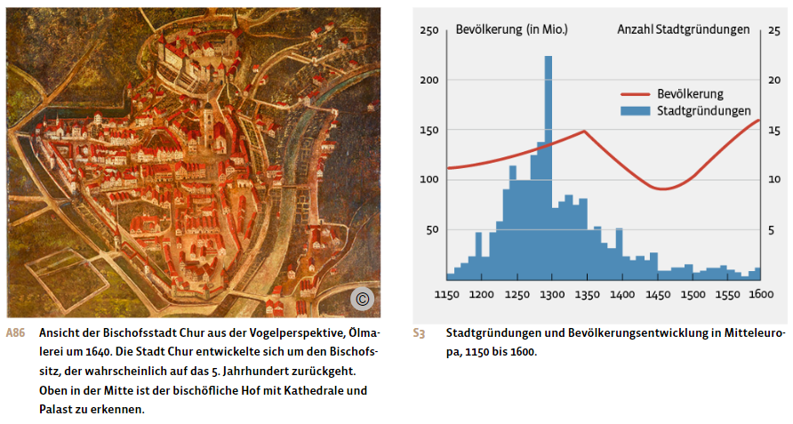
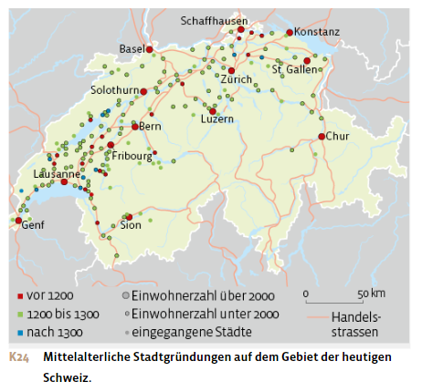
Der Gründungsboom stoppte, als Missernten und Hunger das Bevölkerungswachstum abflachen liessen. In einzelnen Regionen Europas geschah dies schon in den 1270er-Jahren und generell nach 1300. Stattdessen verdichtete sich im 14. und 15. Jahrhundert vor allem in Mitteleuropa das Städtenetz, indem bereits bestehende Siedlungen zu Kleinstädten ausgebaut wurden.
Macht in der Stadt
Stadtherr und städtische Privilegien
Die hochmittelalterliche Stadt hob sich äusserlich durch die Stadtmauern, Türme und Tore klar von den dörflichen Siedlungen ab. Noch im 12. Jahrhundert bezeichnete man deshalb kleine Städte auch als «Burg»; der Begriff «Bürger» leitet sich davon ab. Nicht nur baulich, sondern auch rechtlich unterschied sich die Stadt deutlich vom feudalen Umland: Die Stadt bildete einen eigenen Friedens- und Rechtsraum. Auf städtischem Boden herrschte der Grundsatz der Gewaltlosigkeit; eine eigene Gerichtsbarkeit garantierte den Schutz von Person und Eigentum. Selbstjustiz, wie sie bisher vor allem der Adel für sich beanspruchte, war nicht erlaubt. Zudem verfügte die Stadt über gewisse Selbstverwaltungsrechte.
Die Macht über die mittelalterliche Stadt oblag in der Regel dem Landesherrn, der die obrigkeitliche Gewalt meist einem Stadtherrn aus dem weltlichen oder geistlichen Adel verlieh. Dieser Stadtherr regierte entweder direkt und residierte in der Stadt, oder er liess sich von einem Ministerialen, einem Verwaltungsbeamten, vertreten.
Der Stadtherr verfügte in der Stadt über Hoheitsrechte wie das Markt-, Münz-, Zoll- und Steuerrecht sowie über die Polizei- und Gerichtsgewalt. Dazu kam der Burgbann, mit dem der Stadtherr die Bürgerschaft zum Bau und Unterhalt der Stadtbefestigung beiziehen konnte.
Um die Stadt attraktiv zu machen, gab der Stadtherr nun einzelne dieser Hoheitsrechte an die Stadtbewohner ab. Insbesondere das Marktrecht übertrug er entweder an städtische Verbände, wie die in Gilden zusammengeschlossenen Kaufleute, oder an die städtische Bürgerschaft als Ganzes. Zumeist verlieh der Stadtherr diese Rechte bereits bei der Errichtung der Stadt. Als beispielsweise der Herzog von Zähringen 1120 die Stadt Freiburg im Breisgau gründete, lockte er Kaufleute mit grosszügigen Privilegien zum Zuzug an: Sie erhielten Grundbesitz zum Bau von Häusern, waren von Abgaben befreit, durften Richter und Pfarrer selbst wählen und ihre Streitigkeiten nach dem Kaufmannsrecht eigenständig regeln. Mit dem Anwachsen der Stadt wurden diese Rechte dann auf die gesamte Freiburger Bürgerschaft übertragen.
Im Laufe der Zeit konnten die Städte immer mehr Rechte vom Stadtherrn durch Kauf oder Pfändung erwerben und so ihre Autonomie schrittweise erweitern. Manchmal erstritt sich die städtische Bürgerschaft ein Hoheitsrecht auch in gewaltsamen Auseinandersetzungen mit dem Stadtherrn.
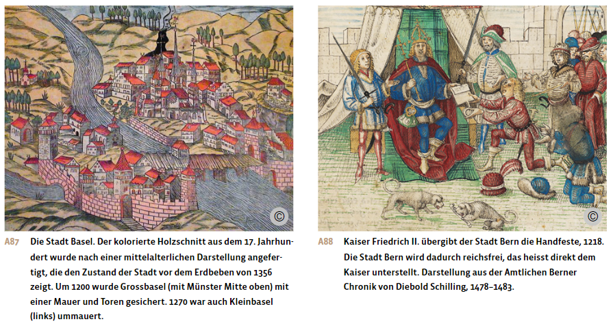
Die Herausbildung von Stadtrechten
Die vom Stadtherrn an die Stadtbevölkerung verliehenen Privilegien wurden ab dem 12. Jahrhundert verschriftlicht und mit gewohnheitsrechtlichen und neuen Bestimmungen ergänzt, sodass eine umfangreiche Rechtssammlung entstand: das Stadtrecht. Dieses regelte die Herrschaftsbeziehung der Bürgerschaft zum Stadtherrn sowie zunehmend auch das Zusammenleben der Stadtbevölkerung untereinander.
Das Stadtrecht unterschied sich von Stadt zu Stadt. Bei Neugründungen wurde aber teilweise auch das Stadtrecht einer älteren, angesehenen Stadt kopiert.
Zentraler Teil des Stadtrechts war die Ausübung einer eigenen Gerichtsbarkeit. Vielen Städten gelang es schliesslich, dem Stadtherrn die Gerichtshoheit abzukaufen oder gegen die Verpfändung von Gütern in die eigene Hand zu bekommen. Mit dem Stadtfrieden versuchten die Städte, Gewaltlosigkeit auf ihrem Boden durchzusetzen, den Schutz von Person und Eigentum zu wahren sowie Verstösse strafrechtlich zu ahnden. Innerhalb der Stadt durfte kein Streit mit der Waffe ausgetragen werden, und auf dem Markt galt der Marktfrieden. Dieser Teil des Stadtrechts war keine Selbstverständlichkeit in einer Zeit, wo Fehden und gewalttätige Selbstjustiz an der Tagesordnung waren.
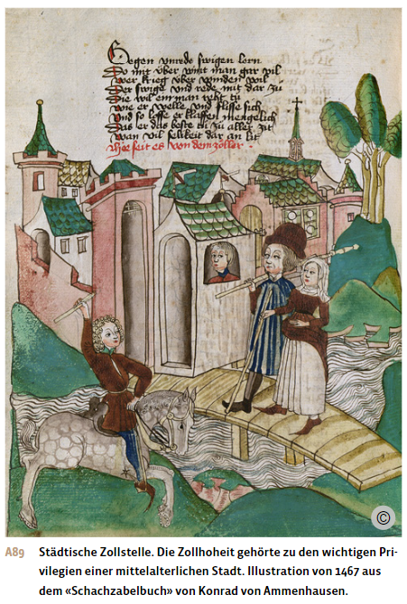
Ein weiteres wichtiges Rechtsprinzip der mittelalterlichen Stadt war die Freiheit von grundherrlichen Bindungen sowie das persönliche Grundbesitz- und Erbrecht. Um diese Privilegien vom Landesherrn zu erlangen, erbrachte die städtische Bürgerschaft nicht selten erhebliche finanzielle Opfer. So wandte zum Beispiel das norddeutsche Lüneburg 1247 rund 93,5 kg Silbergeld auf, um für alle in der Stadt lebenden Leibeigenen des Herzogs die persönliche Freiheit zu bekommen. Oft erreichte die Stadtbevölkerung aber nur eine Milderung ihrer Unfreiheit, indem der Stadtherr etwa auf gewisse Dienste oder Abgaben verzichtete.
Zudem hielt das Stadtrecht noch weitere vom Stadtherrn an die Stadt vergebene Privilegien fest, etwa das Markt- und Steuerrecht, die Befestigungs- und Wehrhoheit, Rechte über Wege, Brücken und Mühlen oder die Aufsicht über Masse und Gewichte.
Die städtische Selbstverwaltung umfasste auch das Recht, Gesetze nach eigenen Bedürfnissen zu erlassen, etwa bei der Steuererhebung, der Ausgestaltung des Marktrechts oder im Armenwesen. Schliesslich enthielt das Stadtrecht auch vermehrt Regelungen über eigene politische Institutionen wie den Stadtrat.
Städtische Autonomiebewegung
Seit dem 11. Jahrhundert schlossen sich die Bürger in Schwurvereinigungen oder Bruderschaften zusammen und stritten mit dem Stadtherrn um wirtschaftliche und politische Freiheiten. Ihr Ziel war es, Autonomie zu erlangen, also sich selbst zu verwalten und eigenes Recht setzen zu können. Mit der Zeit schafften es die Bürger vieler Städte, eigene Räte zu bilden und die Regierung und Verwaltung ihrer Stadt ganz zu übernehmen. Diese Ablösung vom Stadtherrn erfolgte aber in einem langfristigen Prozess und gelang nicht allen Städten. Die politischen Rahmenbedingungen spielten dabei eine wichtige Rolle.
Erfolgreich in ihren Autonomiebemühungen waren Städte, die den Stadtherrn gegen den Landesfürsten oder König ausspielen konnten. Diese Möglichkeit bot sich insbesondere in den Bischofsstädten. Im Investiturstreit konnten nämlich die Stadtbewohner im Konflikt mit dem bischöflichen Stadtherrn Unterstützung vom König erhalten. Nicht selten kam es im Zuge dieser kommunalen Bewegung auch zu Gewalttaten gegen die Vertreter der städtischen Herrschaft. Doch in der Regel kaufte die städtische Oberschicht dem Stadtherrn die Rechte und Freiheiten ab und übernahm so schrittweise die Regierung der Stadt.
In Nord- und Mittelitalien, in Teilen Südfrankreichs sowie in der heutigen Schweiz ermöglichte die schwache oder ganz fehlende Königsgewalt gar eine städtische Machtentwicklung, die über die eigene Selbstverwaltung hinausging: Bald begannen Städte wie zum Beispiel Bern, das Umland zu erobern und eine eigenständige Aussenpolitik zu betreiben.
Wenn jedoch der Landesherr in der Stadt residierte, wie beispielsweise in München, konnte sich die Bürgerschaft kaum städtische Selbstregierung erkämpfen. Ebenso wenig gelang dies, wenn der Stadtherr über viel politische Macht verfügte und die Einheit der Bürger untergrub; dies war in Polen-Litauen der Fall. Aber auch anderswo in Europa erreichten manche Städte keine oder nur eine unvollständige Selbstverwaltung und blieben ihrem weltlichen oder geistlichen Stadtherrn verpflichtet.
Kommune und Rat
Wo die Autonomiebestrebungen erfolgreich waren, bildeten sich städtische Selbstverwaltungsstrukturen heraus. Die Stadtbewohner mit Bürgerrecht schlossen sich zu einem gemeinsam handelnden politischen Verband, der Kommune bzw. der Stadtgemeinde. Diese verstand sich im Verhältnis zum Stadtherrn nicht mehr als Untertan, sondern als gleichberechtigter Vertragspartner.
In Bürgerversammlungen verpflichteten sich die Bürger einer Stadt durch einen Eid, sich gegenseitig zu schützen und Beistand zu leisten. In den Versammlungen entschieden sie auch über wichtige politische und rechtliche Fragen. Mit der Ernennung eines Rates als oberstes Selbstverwaltungsorgan gaben sie sich eine permanente Führung. Am frühesten lassen sich Ratsherren im ausgehenden 11. Jahrhundert in den oberitalienischen Städten nachweisen. In deutschen und eidgenössischen Städten erscheinen die Ratsgremien im 13. Jahrhundert, in Köln beispielsweise 1216 oder in Bern 1218. Als Zeichen dieser selbstbewussten Bürgerschaft bildete das Rathaus das neue Zentrum der Stadt.
Anfänglich hatte noch der vom Stadtherrn eingesetzte Ministeriale den Vorsitz im städtischen Rat; er präsidierte auch das städtische Gericht. Im Laufe der Zeit bauten die Vertreter der städtischen Kommunen ihre Befugnisse jedoch aus. Oft taten sie sich dabei auch mit den Ministerialen zusammen, die sich in der Ablösung vom Stadtherrn einen Machtzuwachs versprachen. In manchen Städten übernahm schliesslich der Rat alle Regierungs-, Rechtsetzungs- und Strafgewalt in eigener Kompetenz.
In den städtischen Kommunen war die Oligarchie, die Herrschaft der Wenigen, die Norm. So setzte sich das Ratsgremium in der Regel aus den reichsten, vornehmsten und mächtigsten Bürgern zusammen, die Grundbesitz in der Stadt hatten. Diese patrizische Führungsschicht konnte es sich leisten, ihre Geschäfte zugunsten der unbezahlten Tätigkeit im Rat zu vernachlässigen. Im damaligen Verständnis befähigte ihr wirtschaftlicher Erfolg sie auch dazu, die Stadt zu regieren.
Die Wahl in den Rat war nach modernem Verständnis nicht frei, sondern erfolgte nach dem Prinzip der Kooptation: Der Rat ergänzte sich selbst, indem er neue Mitglieder hinzuwählte. Neu besetzt wurde ein Ratssitz jedoch normalerweise nur im Todesfall. In der Regel wechselten sich zwei feststehende Ratsgremien jährlich in der Regierung ab.
Die jährliche Ratseinsetzung gehörte zu den wichtigsten politischen Feiertagen in der Stadt. Zur Eidesleistung und Prozession der Ratsherren war die ganze Bürgerschaft geladen; damit versicherte sich der Rat seiner Legitimation.
Mit der Ausweitung der kommunalen Selbstregierung entwickelten sich neben dem Rat neue Positionen und Gremien. Das Amt des Bürgermeisters oder Schultheissen wurde bereits im 13. Jahrhundert eingeführt. Er leitete die Ratssitzungen, verwaltete die Stadt und vertrat sie gegen aussen. Zum Teil erfüllte der Bürgermeister auch leitende polizeiliche Funktionen oder beaufsichtigte Markt und Handel. In einigen Städten stieg er zum Stadtoberhaupt auf. Manchmal regierten auch zwei, selten noch mehr Bürgermeister die Stadt. Weitere führende Rollen kamen dem Bannerherrn als militärischem und polizeilichem Leiter zu, dem Säckelmeister als Finanzchef und in manchen Städten wie Zürich oder Basel auch dem Oberstzunftmeister als Vertreter aller Zünfte.
Spätestens ab der zweiten Hälfte des 14. Jahrhunderts bildete sich in einigen Städten neben dem bisherigen Rat, dem Kleinen Rat, ein Grosser Rat heraus. Dem Kleinen Rat, der meist 12 bis 48 Männer umfasste, oblagen weiterhin die laufenden Regierungsgeschäfte. Der Grosse Rat mit bis zu 300 Mitgliedern tagte wesentlich seltener und war eher beratend tätig. Er nahm unter Leitung des Kleinen Rates zu wichtigen innen- und aussenpolitischen Fragen Stellung und war oberste Gerichtsinstanz.
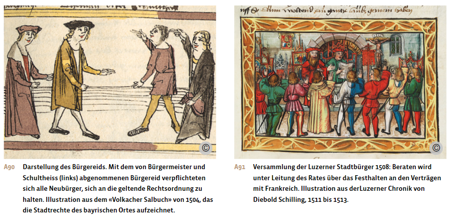
Stadtluft macht frei, aber nicht gleichberechtigt
Vollgültiges Mitglied der Kommune war nur, wer das Bürgerrecht besass. Diese Stadtbürger waren in der Regel persönlich frei. Sie verfügten über einen eigenen Hausstand sowie einen Handwerksbetrieb, ein Handelsunternehmen oder ein Dienstleistungsgewerbe. Über ihr Eigentum konnten sie ohne Einschränkung verfügen, es also verkaufen und vererben. Sie brauchten keine Genehmigung eines Herrn, wenn sie ihren Wohnort wechselten oder heirateten. Sie genossen den Rechtsschutz der Stadt und durften nicht vor stadtfremde Gerichte gezogen werden. Schliesslich verfügten sie über politische Rechte, wenn auch häufig mit Einschränkungen. Der Bürgereid verpflichtete sie aber auch zu Leistungen gegenüber der Stadt: Erwerb von Waffen und Harnisch zur Stadtverteidigung, Bereitschaft zu Lösch- und Wachdiensten, Entrichten städtischer Steuern, kein Wegzug ohne Erlaubnis des Rates. Im Gegenzug genossen Bürger und Bürgerinnen den Schutz der Stadt und – durch Zugehörigkeit zu Zünften – auch Unterstützung im Fall von Armut, Krankheit und Alter.
Zuziehende konnten das Bürgerrecht erwerben, wenn sie den Nachweis erbrachten, nicht unehelich geboren, nicht leibeigen oder hörig und in keinen Rechtsstreit verwickelt zu sein. Zudem mussten sie ihre wirtschaftliche Unabhängigkeit durch einen Vermögensnachweis oder einen Meister- bzw. Lehrbrief belegen sowie eine Probezeit bestehen. Danach mussten sie eine Aufnahmegebühr, das Bürgergeld, entrichten und einen Bürgereid leisten. Damit wurden sie zu Stadtbürgern, und der Stadtschreiber trug ihren Namen ins Bürgerbuch ein. Heirateten fremde Männer oder Frauen in eine Bürgerfamilie ein, war ebenfalls eine Aufnahmegebühr fällig.
Ab dem Spätmittelalter konnten in vielen Städten auch ledige und verwitwete Frauen das Bürgerrecht erwerben. In der Regel garantierte es ihnen, analog den Männern, Heiratsfreiheit und freies Besitz- und Erbrecht, sowie volle Zeugnisfähigkeit vor Gericht. Heirateten sie später, blieben sie bei eigener Geschäftstätigkeit von der Vormundschaft des Ehemannes befreit. Trotz weitgehender rechtlicher Gleichstellung hatten Bürgerinnen aber keinen Zugang zu Ämtern des städtischen Rates oder der kirchlichen Institutionen.
Seit dem ausgehenden 13. Jahrhundert nahmen Städte auch Ausbürger ins Bürgerrecht auf, die ausserhalb des städtischen Friedensbezirks lebten. Dazu gehörten lehens- oder grundrechtlich abhängige Bauern, Wirte und Müller, auf dem Land lebende adlige und geistliche Herrschaftsträger sowie Klostergemeinschaften und ganze Bürgerschaften kleiner Landstädte. Mit Ausnahme des Wahlrechts verfügten die Ausbürger grundsätzlich über die gleichen Privilegien wie die stadtsässige Bürgerschaft. Der Stadt brachte diese Bürgerrechterweiterung mehr Steuereinkünfte, zusätzliche Verteidigungskräfte, eine bessere Versorgung ihrer Märkte und gerichtlichen Einfluss im Umland.
Die Bürger und Bürgerinnen mit vollem Bürgerrecht machten etwa die Hälfte der mittelalterlichen Stadtbevölkerung aus. Der andere Teil umfasste Personengruppen ohne oder mit eingeschränkten bürgerlichen Rechten. Dazu gehörten die zugewanderten Hintersassen. Die Hintersassen waren ehemalige Hörige, die aus einem Abhängigkeitsverhältnis geflohen waren und nach einem Jahr und einem Tag in der Stadt ihre persönliche Freiheit erhielten, sofern der Vogt, Grund- oder Gerichtsherr seine Besitzansprüche in diesen 366 Tagen nicht geltend gemacht hatte. Die Hintersassen waren zwar frei und hatten oft ähnliche Pflichten zu erfüllen wie die Bürgerschaft, sie besassen aber keine politischen Mitbestimmungsrechte. Die städtische Obrigkeit liess die Hintersassen einen Treue- und Gehorsamseid schwören und duldete sie, solange sie sich und ihre Familien finanziell eigenständig durchbrachten. Über keinerlei bürgerliche Rechte verfügten die sogenannten Aufenthalter und Aufenthalterinnen. Das waren Knechte und Mägde oder Handwerksgesellen, die sich oft nur für eine bestimmte Zeit in der Stadt aufhielten und dann weiterzogen.
Die Geistlichkeit einer Stadt profitierte von einem rechtlichen Sonderstatus. Der Bischof, die geweihten Priester mit ihren Untergebenen sowie die Mönche und Nonnen der städtischen Klöster waren – wie auch ihr weltliches Gesinde – zumeist von städtischen Steuern und Diensten befreit. Zudem unterstanden sie nicht der städtischen Gerichtsbarkeit, sondern der kirchlichen. Diese Sonderstellung führte im Spätmittelalter zu Konflikten zwischen Laien und Klerikern. Ziel vieler Stadträte war es, diese Vorrechte der Geistlichkeit zu begrenzen oder zu beseitigen.
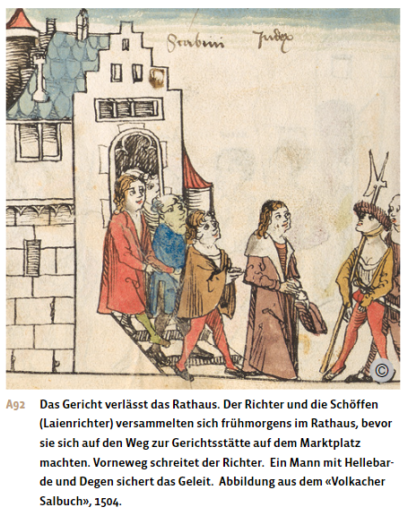
Oben und unten in der städtischen Gesellschaft
Soziale Mobilität
Die Gesellschaft der mittelalterlichen Stadt war in höhere und niedere Gruppen gegliedert. Voraussetzung für eine höhere Stellung war das Bürgerrecht, das erst den Zugang zu den wirtschaftlichen und politischen Privilegien der Stadt eröffnete. Wichtig waren aber auch das Vermögen, der Beruf, die Ehre und das Ansehen.
Die soziale Zusammensetzung der Bevölkerung unterschied sich von Stadt zu Stadt. Sie hing von der Grösse der Stadt, ihrer Wirtschaftsstruktur und ihrem politischen System ab, und sie änderte sich im Laufe der Zeit. So führte die anhaltende Zuwanderung in die Städte zu sozialer Umschichtung. Auch wirtschaftliche Krisen, Epidemien mit hoher Sterberate und andere Umbrüche bewirkten, dass Personen oder Gruppen gesellschaftlich auf- oder abstiegen. Die soziale Mobilität war in den mittelalterlichen Städten generell sehr hoch. Im Laufe des Mittelalters verstärkte sich jedoch die soziale Ungleichheit. Es bildeten sich vier Gesellschaftsschichten heraus: das Patriziat, die handwerklich-gewerbliche Mittelschicht, die Unterschicht und die Randgruppen.
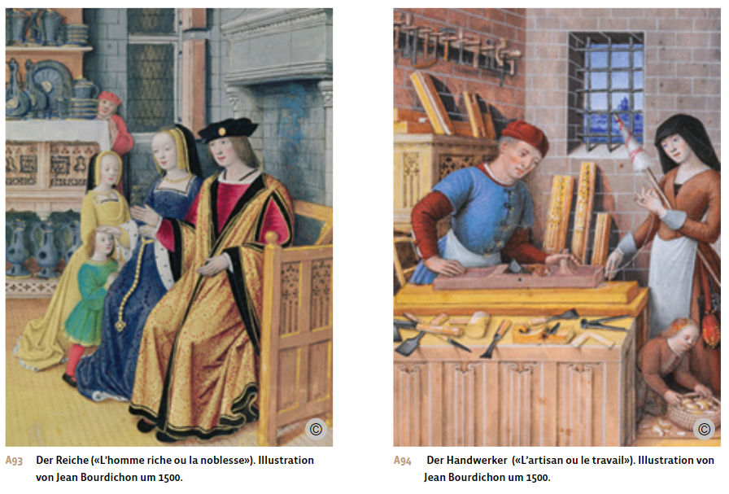
Die patrizische Führungsschicht
An der Spitze der Gesellschaft stand in vielen Städten das Patriziat. Diese Führungsschicht pflegte einen adligen Lebensstil und beanspruchte die Ratssitze und höchsten städtischen Verwaltungsämter für sich. Um sich von wirtschaftlich aufstrebenden Gruppen und den Handwerkszünften abzugrenzen, bildeten sie exklusive Stubengesellschaften, in Zürich etwa die um 1336 gegründete Gesellschaft zur Constaffel oder in Bern die 1390 erstmals erwähnte Gesellschaft zum Distelzwang.
Ihr hohes Einkommen und Vermögen erwirtschafteten die Patriziergeschlechter aus dem Fern- und Grosshandel, aus Bankgeschäften, aus Grundbesitz und aus Einkünften als städtische Amtsträger. Häufig besassen oder erwarben sie im Umland der Stadt auch grund- und gerichtsherrliche Rechte, die ihnen Erträge brachten. In der Eidgenossenschaft häuften sie auch als Militärunternehmer grosse Gewinne an, indem sie Söldner an fremde Mächte vermittelten.
Zum frühen Patriziat gehörten unterschiedliche Gruppen, die sich durch Heirat miteinander verbanden: wohlhabende bürgerliche Kaufherren, die ihre Geschäfte vom städtischen Wohnsitz aus leiteten, in die Stadt zugezogene Landadlige sowie ritterliche Ministerialen des Stadtherrn. Als herrschaftliche Amtsträger wahrten die Ministerialen ihren Einfluss auch in den selbstverwalteten Städten.
Wirtschaftliche Krisen, Naturkatastrophen, Seuchen oder städtische Unruhen führten dazu, dass patrizische Geschlechter verschwanden, neu zuziehende Familien ihren Platz einnahmen oder vermögende Handwerker und Gewerbetreibende in die Oberschicht aufstiegen. Ab dem späten 15. Jahrhundert wurden Wechsel in der städtischen Elite seltener, und im Übergang zum 16. Jahrhundert schloss sich das Patriziat als eigener Stand zunehmend gegen Aussenstehende ab. Ein Aufstieg in die ratsfähige Führungsschicht war kaum mehr möglich. Heiraten wurden nur mehr unter den patrizischen Familien arrangiert.
Handwerklich-gewerbliche Mittelschichten
Zur breiten Mittelschicht gehörten die im Handwerk, Kleinhandel und Gewerbe tätigen Städter und Städterinnen. Die Handwerktreibenden machten oft fast die Hälfte der städtischen Bürgerschaft aus und waren mehrheitlich in Zünften organisiert. Zwischen wohlhabenden und armen Zunftmitgliedern bestanden allerdings grosse soziale Unterschiede. So blickte beispielsweise ein reicher Gewandschneider, der mit kostbarer Seide hantierte und etliche Angestellte beschäftigte, auf die kleine Schneiderei herab, die nur grobe Leinenstoffe für das einfache Volk verarbeitete und die Familie knapp ernährte.
Das obere Feld der Mittelschicht besetzten mittlere Kaufleute, Unternehmerfamilien und Gewerbetreibende wie etwa ein Müller, der sich am Getreidehandel beteiligte, oder ein Metzger, der in den überregionalen Vieh- und Wollhandel investierte. Ähnlich gut gestellt waren auch städtische Bedienstete wie Stadtschreiber, Notare und Advokaten, freiberuflich Tätige wie Apotheker oder Baumeister und wohlhabende Ackerbürgerfamilien, die in Stadtnähe Sonderkulturen wie Wein, Flachs oder Hanf anbauten. Diese obere Mittelschicht verfügte nicht nur über mehr Einkommen und Vermögen als das Kleingewerbe, sondern oft auch über eine gewisse Bildung. Im oberen Teil der Vermögensskala bewegten sich auch Angehörige des Metallgewerbes, der Lebensmittelversorgung und der Lederverarbeitung, während landwirtschaftliche und holzverarbeitende Tätigkeiten, das Schuhmacher- und Schneidergewerbe oder Berufe in der Körper- und Krankenpflege am unteren Ende standen. Ein breites soziales Spektrum wiesen hingegen das Baugewerbe und die Textilproduktion auf.
Die städtischen Unterschichten
Ein grosser Teil der Stadtbevölkerung zählte zur Unterschicht. In Zürich, Schaffhausen, Bern und Luzern machte ihr Anteil im 15. Jahrhundert etwa ein Drittel aus. Die meisten dieser Menschen waren besitzlose Hintersassen ohne Bürgerrecht sowie Arbeitskräfte mit befristetem Aufenthaltsrecht in der Stadt. Sie arbeiteten meist in unselbstständiger beruflicher Stellung, hauptsächlich als Handwerksgesellen und -lehrlinge, als Hilfskräfte im Tagelohn oder als Mägde und Knechte in städtischen Haushalten. Unter den wirtschaftlich Schwachen waren aber auch Personen mit Bürgerrecht zu finden, die im Kleingewerbe, als Lohnabhängige oder als Selbstständige arbeiteten. Zu Letzteren zählten etwa ledige Frauen, die sich als Näherinnen, Weberinnen, Wäscherinnen oder Kleinkrämerinnen durchzubringen versuchten.
Die Angehörigen der Unterschichten rangierten in den untersten Steuerklassen, falls sie über einen kleinen Besitz, etwa ein bescheidenes Haus oder Hausrat, verfügten. Sonst zahlten sie lediglich die Kopfsteuer. Mangels Quellen ist wenig über diese grosse Gruppe bekannt. Die meisten lebten auch bei regelmässigem Einkommen am Existenzminimum. In Krisenzeiten sahen sie sich gezwungen, kirchliche oder kommunale Fürsorge zu beanspruchen oder um Almosen zu betteln. Solche Notlagen entstanden durch Einbrüche der Wirtschaftskonjunktur oder durch Inflation, aber oft war Armut in der mittelalterlichen Gesellschaft auch individuelles Schicksal – zurückzuführen auf Krankheit, Unfall, Alter oder Verwitwung.
Gesellen, also Handwerker in Ausbildung, sowie Mägde und Knechte lebten in Abhängigkeit vom Meister oder der Hausherrin. Neben Unterkunft, Kost und Kleidung erhielten sie einen geringen Lohn. Auch bei den Gesellen war dieser kaum ausreichend und gab Anlass zu ständiger Klage. Dienstboten stammten oft aus unfreien Familien vom Land. Sie traten ihren Dienst in der Stadt manchmal schon im Alter von 8 bis 10 Jahren an. Knechte verdienten mehr als Mägde, doch reichte auch ein Männerlohn nicht zur Versorgung einer Familie aus.
Städtische Randgruppen
An den untersten Rand der städtischen Gesellschaftsordnung gedrängt sahen sich Personen, die wegen ihres Berufs, ihrer Religion, ihrer Lebensweise und Krankheit oder aufgrund herrschender Vorurteile und moralischer Normen verachtet wurden. Zu den unehrlichen Gewerben, das heisst, Tätigkeiten ohne ständisches Ansehen, gehörten zum Beispiel Schafhirten, Nachtwächter, Prostituierte, aber vielerorts auch Bader und Barbiere. Letztere waren lange verfemt, weil sie in öffentlichen Badestuben wundärztliche Behandlungen und Körperpflege anboten und dabei mit kranken Menschen und Blut in Berührung kamen. Das Berufsbild wandelte sich allerdings mit der Zeit und es entstanden zum Teil Bader- und Barbierszünfte.
Nicht ortsfest lebende Menschen, die mit Kleinwaren hausierten, Kessel flickten, Lumpen sammelten, als Spielleute auftraten oder aufgrund einer geistigen oder körperlichen Beeinträchtigung betteln mussten, zählten ebenfalls zu den verachteten Personengruppen. Schliesslich schloss man Aussätzige aus Angst vor Ansteckung aus der Gesellschaft aus.
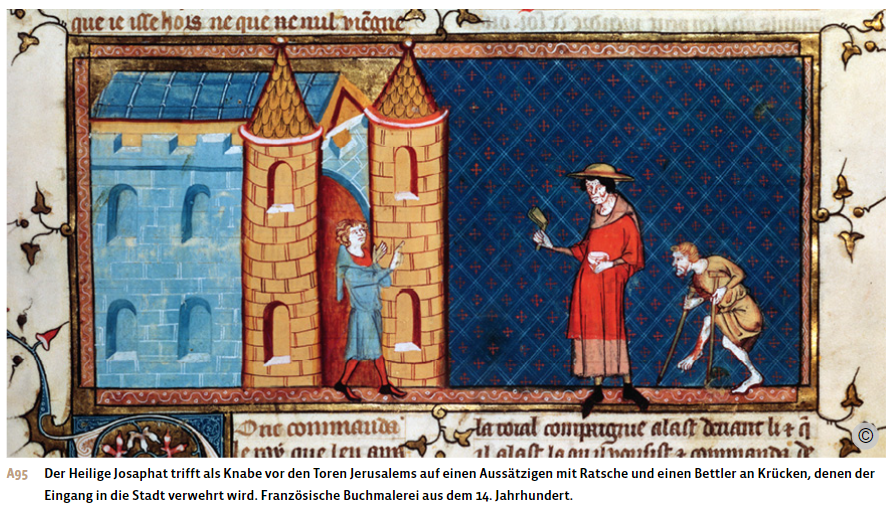
Die jüdische Stadtbevölkerung
Die Juden und Jüdinnen nahmen aufgrund ihrer Religionszugehörigkeit eine Sonderstellung in der mittelalterlichen christlichen Gesellschaft ein. Ihre Religion durften sie frei ausüben, doch galten sie im Verhältnis zu den Christen als minderberechtigt. Von Südeuropa ausgehend, entstanden bis Ende des 11. Jahrhunderts jüdische Gemeinden vor allem in den Städten der Champagne, der Normandie, im Rheinland, vereinzelt auch an der Elbe und der Donau.
Im Hochmittelalter erhielten die jüdischen Gemeinden den besonderen Schutz der christlichen Könige. Juden und Jüdinnen konnten auch die Aufnahme ins Bürgerrecht einer Stadt beantragen. Dadurch genossen sie städtischen Schutz für ihr Leben, ihre Ehre und ihr Vermögen. Trotzdem wurden sie seit dem ersten Kreuzzug im Jahr 1096 immer wieder Opfer blutiger Verfolgungen.
Wie ihre christlichen Nachbarn war die jüdische Stadtbevölkerung in der frühen Phase der Stadtentwicklung in den unterschiedlichsten Berufsgruppen vertreten. Doch mit dem Aufkommen der Zünfte verengte sich ihr wirtschaftlicher Handlungsspielraum, da sich diese als christliche Berufsorganisationen verstanden und keine jüdischen Mitglieder aufnahmen. Juden und Jüdinnen arbeiteten in der Folge vermehrt im Kleinhandel und im Geldverleih, was sie besonders angreifbar machte.
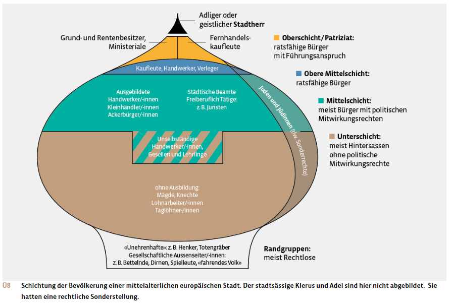
Städtische Wirtschaft und Zunftwesen
Der Markt – Zentrum des städtischen Lebens
Der Markt gehörte zusammen mit dem Stadtrecht und den Stadtmauern zu den zentralen Merkmalen der mittelalterlichen Stadt. Er bildete den Mittelpunkt des städtischen Wirtschaftens. Meist fand ein täglicher Markt mit den Erzeugnissen des einheimischen Handwerks und Gewerbes statt, entweder auf dem zentralen Marktplatz, in der öffentlichen Markthalle oder in der jeweiligen Werkstatt. Zusätzlich boten Wochen- oder Monatsmärkte eine breite Auswahl an Lebensmitteln und importierter Ware feil, etwa Salz, Metalle oder Tuche.
Das Marktrecht erlaubte es einer Stadt, in ihren Mauern einen Markt abzuhalten, und legte die Rechte und Pflichten des Marktortes und der Marktbesucher und -besucherinnen fest. Für die Dauer des Marktes galt der Marktfrieden, eine strenge Rechtsordnung, um Diebstahl, Betrug und Gewalt am Markt zu verhindern. Gleichzeitig garantierte der Marktherr – der König, der Stadtherr oder später die selbstverwaltete Stadt – freien Handelsverkehr und sicheres Geleit auf den Zufahrtswegen. Kaufleute durften deshalb nur bestimmte Verkehrswege bis zum Marktort benutzen, es herrschte also Wegzwang. An Toren und Brücken mussten sie Transit-, Brücken- und Strassenzölle entrichten. Am Markt selbst wurden Markt-, Waag- und Standgebühren erhoben.
Mit dem Marktrecht verband sich der Marktzwang: Geschäfte waren auf dem offiziellen Marktplatz und während der festgelegten Zeiten zu tätigen; «Markten» in Gasthöfen oder vor den Stadttoren war untersagt. Verpönt war auch Fürkauf, preistreibender Zwischenhandel. Marktaufseher kontrollierten als städtische Beamte die Einhaltung der vorgegebenen Marktregeln. Sie prüften die Qualität, die Masse und Gewichte sowie den Preis des Angebots und teilten die Plätze für die beweglichen Verkaufsstände zu. Das Marktgericht beurteilte vor Ort Schuld- und Handelsstreitigkeiten oder Friedensbruch.
Wichtige Marktorte erhielten neben dem Marktprivileg oft auch das Recht verliehen, Zölle zu erheben, Münzen zu prägen und eigene Masse und Gewichte vorzugeben. In vielen Städten Europas markierte ein Steinkreuz, das sogenannte Marktkreuz, die Marktfreiheit und den Marktfrieden. Je nach Region und Zeit traten an die Stelle des Marktkreuzes auch Fahnen, ein Brunnen oder mit Symbolen verzierte Steinsäulen.
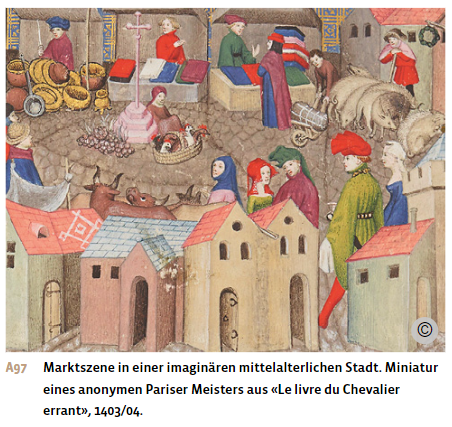
Im 12. und besonders im 13. Jahrhundert begünstigte das wirtschaftliche Wachstum die Aufteilung des Handels in Fachmärkte. Grosse Städte reservierten für den Verkauf von Fisch, Vieh, Heu oder Holz bestimmte Plätze oder Gassen. Die Märkte dienten aber nicht nur dem Waren-, sondern auch dem Nachrichtenaustausch. Städte waren deshalb auch wichtige Kommunikationszentren und Begegnungsorte.
Um sich mit Nahrungsmitteln, Holz und weiteren Rohstoffen zu versorgen, blieben die Städte weiterhin stark auf ihr Umland angewiesen. Dieses richtete sich seinerseits immer mehr auf die städtischen Wirtschaftszentren und ihren Markt aus. Dadurch entstanden Agrarlandschaften, die sich auf gut absetzbare Gewächse wie Flachs, Wein, Hopfen, Obst oder auf die Fleisch- und Milchproduktion konzentrierten.
Spezialisierung in Handwerk und Gewerbe
Städte dienten nicht nur dem Warentausch, sondern entwickelten sich auch zu Zentren der handwerklichen Produktion. Handwerk und Gewerbe blühten im Zuge des hochmittelalterlichen Bevölkerungswachstums auf, das Warenangebot weitete sich aus, und die Produktequalität verbesserte sich. Technische Fortschritte bei der Nutzung von Wasser- und Windenergie sowie bei mechanischen Werken wie Hammer-, Walk-, Gerb-, Draht- oder Papiermühlen rationalisierten die Arbeit und steigerten die gewerbliche Produktion. Die Geldwirtschaft begann die Naturalwirtschaft zurückzudrängen.
Gleichzeitig bildeten sich in den Städten neue und spezialisierte Berufe heraus. Dies zeigte sich etwa in der Lebensmittelversorgung, wo Mühlen, Brot- und Kuchenbäckereien sowie Brauereien und Metzgereien entstanden. Im Textil- und Bekleidungsbereich entfalteten sich Spinn-, Web-, Färb-, Filz-, Schneider-, Gerber- oder Schusterberufe. In der Eisen- und Metallverarbeitung grenzten sich die Grob- und Hufschmiede von den Fein-, Gold- und Silberschmieden ab. Dazu kam das Metallgewerbe, das sich auf die Produktion von Waffen, Harnischen, Sporen, Werkzeugen, Draht, Nägeln und Nadeln spezialisierte. Auch Dienstleistungen wurden vermehrt nachgefragt, etwa beim Transport, bei der Beherbergung oder bei der Gesundheitspflege. Mitunter richtete sich die Wirtschaft einer ganzen Stadt auf ein bestimmtes Gewerbe aus. Beispiel dafür ist die Konzentration auf den Textilbereich in Oberitalien, im heute belgischen Flandern, in der Region um Paris und im Bodenseegebiet.
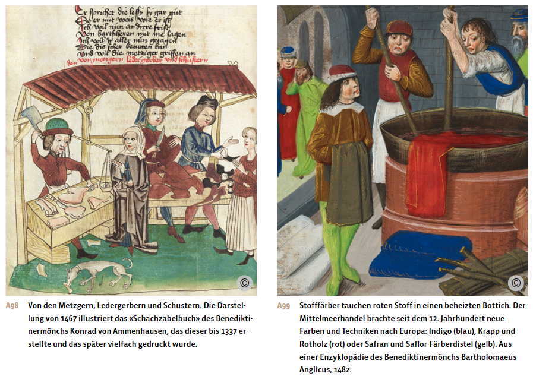
Zweck und Aufgaben der Zünfte
Schon im 12. Jahrhundert begann sich die im Handwerk und Gewerbe tätige Stadtbevölkerung West- und Mitteleuropas in Verbänden zusammenzuschliessen. Diese genossenschaftlich organisierten Vereinigungen entstanden im Zuge der städtischen Autonomiebewegung. Sie hatten das Ziel, die gemeinsamen Interessen zu wahren und sich wechselseitig zu unterstützen, um allen Zunftmitgliedern ein standesgemässes Auskommen zu sichern.
Die Bezeichnung Zünfte für solche Handwerks- und Gewerbeorganisationen ist im deutschsprachigen Raum erstmals 1226 in Basel nachweisbar: Der Basler Bischof förderte als Stadtherr zünftische Zusammenschlüsse, um das Handwerk und Gewerbe besser kontrollieren zu können. In Norddeutschland hiessen sie «Innung», «Werk» oder «Amt», am Niederrhein «Gaffel» oder «Gilde».
Jede Zunft entwickelte eigene Bestimmungen, die in der Zunftordnung zusammengefasst wurden. Diese Statuten regelten die Mitgliedschaft, die Ausbildung, die Berufsausübung, die Qualität und den Preis der Ware sowie die soziale Unterstützung. Die Zunftordnung sah aber auch Anstandsvorschriften und Bussen bei Verstössen vor, im schlimmsten Fall gar den Ausschluss aus der Zunft. Die Zunft bewahrte diese Satzungen zusammen mit den Zunftzeichen und Wertgegenständen in der Zunftlade, einer oft kostbar verzierten Truhe, auf.
Den Vorsitz in der Zunft hatte der Zunftmeister, der meist vom «Sechser», sechs Beisitzern, unterstützt wurde. Ihre Wahl erfolgte entweder durch die ganze Zunft oder durch das sich selbst ergänzende Sechser-Gremium. Sie entschieden über Verstösse gegen die Zunftordnung und Streitfälle innerhalb der Zunft.
Die Zunft verstand sich als Interessen- und Schutzverband eines bestimmten Handwerks und Gewerbes. Materielles Wohlergehen der Zunftmitglieder war ihr zentrales Anliegen. Dabei ging es der Zunft nicht um Gewinnmaximierung, sondern um die Sicherung eines standesgemässen Lebensunterhalts. Mit dem Zunftzwang schützte sie ihre Mitglieder vor fremder Konkurrenz: Nur Zunftangehörigen war die Ausübung des betreffenden Handwerks gestattet. Damit alle Mitglieder ein Auskommen fanden, beschränkte die Zunft die Zahl der Handwerksmeister und die Anzahl Gesellen und Lehrlinge pro Werkstatt, bestimmte über die Produktionsmenge und legte die Löhne und die Preise fest. Zudem kontrollierte die Zunft auch den Zugang zu den Rohstoffen durch Spekulationsverbote, setzte Normen für die Produktequalität fest und überwachte diese. Manche Zünfte unterhielten eigene Verkaufs- und Lagerhäuser oder auch Werkmühlen, die durch Wasser-, Wind-, Tier- oder Menschenkraft angetrieben und etwa zum Stampfen, Walken, Sägen oder Hämmern eingesetzt wurden. Neuerungen duldeten die Zünfte, wenn sie ihren Berufsstand nicht gefährdeten. Drohten aber Konkurrenz und Arbeitsplatzverlust, wurden Innovationen rigoros bekämpft.
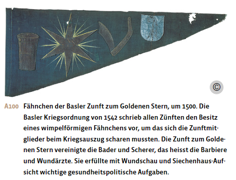
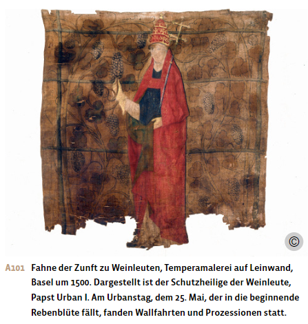
Auch die Ausbildung des beruflichen Nachwuchses unterlag strengen Bestimmungen. Die Lehrlinge begannen ihre Lehrzeit im Alter von acht bis elf Jahren. Sie wurden in der Werkstatt in den Beruf eingeführt und lebten meist bei der Meisterfamilie. In einigen Berufen hatten die Eltern, in anderen der Meister oder die Meisterin ein Lehrgeld zu zahlen, das je nach Beruf und Ansehen der Zunft stark variierte. Nach drei bis fünf Jahren, je nach Zunft auch später, hatten sich die Lehrlinge in der Gesellenprüfung über die notwendigen handwerklichen Fertigkeiten auszuweisen. Nach Bestehen der Prüfung wurden die Burschen in einem feierlichen Ritual «losgesprochen» und erhielten ein Zeugnis über die bestandene Ausbildung, den Gesellenbrief. Danach gingen die Gesellen meist auf eine mehrjährige Wanderschaft in andere Städte, um ihre beruflichen Kenntnisse zu vertiefen.
Einen eigenen Betrieb konnten die ausgelernten jungen Männer erst nach Erwerb des Meistertitels führen. Dafür mussten sie vor versammelter Zunft eine Prüfung ablegen und – je nach Beruf – auch ein Meisterstück abliefern. Dienten diese Vorgaben der Qualität des Handwerks, kamen ab dem 16. Jahrhundert immer mehr Zugangsbeschränkungen dazu. Um Konkurrenz auszuschalten, hielten die etablierten Meister die Zahl der Werkstätten bewusst knapp. Zu diesem Zweck setzten sie etwa die Gebühren der Meisterprüfung so hoch an, dass sie für viele Gesellen unüberwindlich waren. Oder sie verlangten einen schriftlichen Nachweis persönlicher Freiheit, ehrlicher und ehelicher Geburt und eines guten Leumunds. Vielen Handwerkern blieb daher der Aufstieg zum Meister verbaut, sie blieben zeit ihres Lebens Gesellen.
Neben beruflichen Interessen verfolgte die Zunft auch religiöse, ethische und soziale Ziele. Als Schutzgemeinschaft verpflichtete sie ihre Mitglieder und deren Familien zu gegenseitiger Hilfe, etwa bei Krankheit, Unfall oder Tod. Deshalb verfügten manche Zünfte auch über Kranken- und Sterbekassen. Den Zusammenhalt förderten sie durch die gemeinsame Teilnahme an religiösen Festen und Umzügen, etwa zu Ehren ihres Schutzheiligen, und durch die Pflege der Geselligkeit. So versammelten sich die Zunftmitglieder in eigenen Trinkstuben oder in repräsentativen Zunfthäusern.
Schliesslich übernahmen die Zünfte auch wichtige Aufgaben für die gesamte Stadt, etwa in der Brandbekämpfung, beim Wachdienst und bei der Stadtverteidigung. In der Bürgerwehr stellten die Zünfte eigene Formationen, denen gewisse Stadtteile oder Mauerabschnitte zur Verteidigung zugewiesen waren. Zunftmeister und wohlhabende Mitglieder waren verpflichtet, eine vollständige Kriegsrüstung, also Brustpanzer, Helm, Eisenhandschuhe und Waffen bereitzuhalten, während man bei weniger Begüterten den «halben Harnisch» duldete. Nicht selten verfügten Zünfte auch über eine Rüstkammer mit Waffen und anderem Kriegsgerät.
Entwicklung der Zünfte
Aufgaben und Einfluss der Zünfte unterschieden sich von Stadt zu Stadt und veränderten sich im Laufe der Jahrhunderte. In den Gebieten der heutigen französisch- und italienischsprachigen Schweiz schlossen sich die Handwerker erst im 14. und 15. Jahrhundert in Bruderschaften und Zünften zusammen und blieben vor allem als genossenschaftliche Handwerks- und Gewerbeorganisationen tätig.
In den deutschsprachigen Städten traten die Zünfte hingegen zunehmend auch als politische Kraft auf. Die aufstrebenden Handwerker versuchten, im Rat Einsitz zu nehmen und die Stadtpolitik mitzugestalten. Dabei gerieten sie in Konflikt mit der patrizischen Führungselite, die ihre Macht nicht teilen wollte. Dieser Kampf der Zünfte um politische Mitbestimmung begann im 13. Jahrhundert und erreichte seinen Höhepunkt im Spätmittelalter und darüber hinaus.
Zu Kompetenzstreitigkeiten und Machtkonflikten kam es auch immer wieder zwischen reichen und armen Meistern innerhalb einer Zunft oder zwischen «höheren» und «niederen» Zünften, wo wohlhabende und politisch einflussreiche Kaufleute, Bankiers und Goldschmiede den kleineren, um ihre Existenz kämpfenden Handwerkern gegenüberstanden.
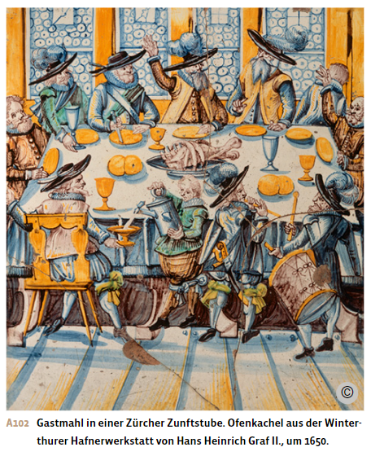
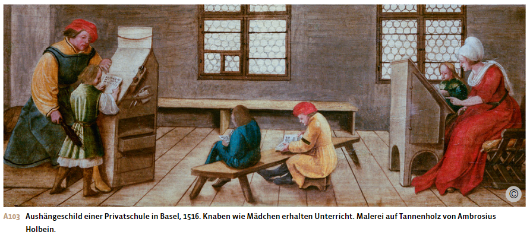
Bildung
Neue Bildungsbedürfnisse
Im Frühmittelalter hatte sich die Bildung auf die Klöster und auf die Dom- und Stiftsschulen der Bischofsstädte konzentriert. Hier wurde der geistliche Nachwuchs ausgebildet. Mancherorts verfügten diese kirchlichen Bildungsstätten auch über «äussere Schulen» für einen Schülerkreis aus der adligen oder städtisch-patrizischen Führungsschicht. Mädchen aus hohen Kreisen erhielten allenfalls Unterricht in Frauenklöstern oder durch Privatlehrer.
Der Aufschwung der Städte und neue Bedürfnisse in Wirtschaft und Verwaltung verstärkten seit dem 13. Jahrhundert den Bedarf an lese- und schreibkundigen Menschen sowie rechtskundigen Fachleuten. Um dieser Nachfrage nachzukommen, richteten Stadträte deshalb weltliche Schulen ein, zum Beispiel 1240 in Bern oder 1253 in Schaffhausen. Nicht selten geriet die städtische Führungsschicht dabei in Konflikt mit dem Bischof, der den Verlust des Lehrmonopols befürchtete.
Latein- und Grammatikschulen
An den weltlichen und kirchlichen Lateinschulen erhielten die Söhne der städtischen Oberschicht eine fundierte Ausbildung in Latein und übten sich in den sieben freien Künsten: zum einen in Grammatik, Rhetorik und Dialektik, zum anderen in Arithmetik, Geometrie, Astronomie und Musiktheorie. Während Kaufmannssöhne ihre weitere Ausbildung an einem ausländischen Handelskontor absolvierten, traten die Sprösslinge der politischen Führungsschicht in Kanzleien ein, wo sie sich mit Amts- und Rechtsgeschäften vertraut machten.
Die Stadt- oder Grammatikschulen wiesen ein tieferes Niveau als die Lateinschulen auf und vermittelten die für Handel und Gewerbe wichtigen Grundkenntnisse. Ihre Zahl wuchs im ausgehenden Mittelalter stark an. Neben städtischen Schulen gab es oft auch privat betriebene Grammatikschulen. Weitere Schulhäuser mit einem besoldeten Schulmeister entstanden durch Stiftungen von Einzelpersonen. Oft waren es umherziehende Schreiber, Studenten und Geistliche, die den Bürgersöhnen das Lesen, Schreiben und Rechnen in der jeweiligen Volkssprache und manchmal auch Grundkenntnisse in Latein beibrachten. Mädchenschulen und damit lehrende Frauen sind sehr selten belegt, etwa für Paris im Jahr 1360.
Die Verbreitung solcher Schulen liess gegen Ende des Mittelalters die Zahl der schreib- und lesekundigen Knaben und Männer nicht nur bei den Patriziern, sondern auch in den stadtbürgerlichen Mittelschichten ansteigen. Eine stärkere Alphabetisierung setzte jedoch erst im 16. Jahrhundert ein.
Die universitäre Bewegung
Die ersten europäischen Universitäten für Recht und Medizin entstanden in Paris und in Bologna im 12. Jahrhundert. Fast ebenso alt sind die vor 1220 gegründeten Hochschulen von Montpellier, Oxford und Cambridge. Im Laufe des 13. Jahrhunderts kamen weitere zehn Universitäten im südlichen Europa hinzu. Der eigentliche Aufschwung der universitären Bewegung fand aber erst im 14. und 15. Jahrhundert statt, als auch Städte Mittel- und Nordeuropas nachzogen. Die älteste Universität der Schweiz wurde 1460 in Basel gegründet und vom Stadtrat finanziell unterstützt. Er erhoffte sich für Basel einen Aufschwung als Gelehrtenstadt.
Die Universitäten entwickelten sich oft aus Privatschulen bekannter Professoren, die sich mit ihren Studenten zu einer grösseren Institution zusammenschlossen. Andere Hochschulen wie Bologna oder Salamanca entstanden, indem sich Studenten zusammentaten und für ihre Ausbildung gemeinsam Gelehrte anstellten.
Ihren Standort hatten die Universitäten in grossen Städten, da diese nicht nur Friedens- und Rechtsschutz, sondern auch die nötige Infrastruktur wie Unterrichtsräume, eine Bibliothek, Unterkunft und Versorgung boten. Päpste und viele Könige unterstützten die universitäre Bewegung, um die Ausbildung von Theologen und Juristen zu verbessern, die sich nachher in ihren Dienst stellten.
Die mit Freiheiten und Privilegien ausgestatteten Universitäten zeichneten sich durch eine grosse Autonomie aus. Sie wählten ihre Amtsträger wie Rektoren oder Dekane selbst, definierten ihre Regeln und gestalteten die Lehre inhaltlich wie organisatorisch eigenständig. Oft verfügten sie über einen eigenen Gerichtsstand oder waren von Steuern befreit. Doch nutzten die Päpste – mehr noch als die Könige – die Förderung der Hochschulen auch dazu, ihre oberste Autorität in diesen Bildungsinstituten zu behaupten.
Die Universitäten von Paris und Oxford waren stark kirchlich ausgerichtet und widmeten sich vor allem dem Philosophie- und Theologiestudium, während die Hochschulen des Mittelmeerraums sich auf das Studium des römischen Rechts konzentrierten und einen grossen Teil der dortigen Führungselite ausbildeten. Die Hohen Schulen von Salerno und Montpellier spezialisierten sich dagegen auf die Ausbildung in Medizin.
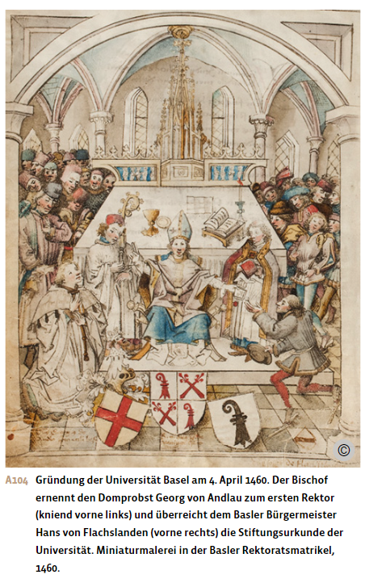
Aus: Notz, Thomas; Frey, Walter (Hg.): Geschichte fürs Gymnasium. Steinzeit bis 1450. Bern 2024, S. 321-336.